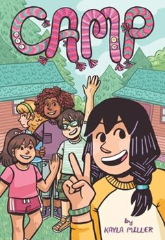
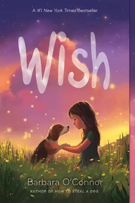

So i'm going to tell you about my favourite books, why they are my favourite and the lessons.
So i'm going to start with amulet. Amulet is one of my favourite books because its kind of like my life. Its really interesting because its a comic and it teaches lessons in a fun way.
Now i'm going to tell you about nevermore which I kind of had to read because my dad found it in a car he bought. I would also recommend this for teenagers beacause there some parts that might make you sad, laugh, angry or happy. The lesson for this book is just to accept faith.
The third story is about a robot that was took care of a goose because the robot made an avalanche and killed all of the goose's family. Then the egg of the goose hatched.
The fourth one is basically the same as third book but just part 2 and that is where the robot has to let go of all her friends.
The fifth one is called the one and only bob and its about a dog and its life. Its quite funny so I recommend it for everyone.
The last book is called the one and only Ivan and its about a gorilla that escapes from its home.
Other fun books
- How to babysit a grandma

- The good egg

- The girls guide to growing up

- Diary of a pug

- Camp

- Wish
